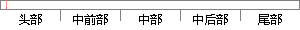

本人郑重声明：所呈交的毕业设计作品，是本人在指导老师的指导下独立完成的。
片段位置图

相似结果|
相似片段 1：论文写作期间，指导老师多次给出意见与建议，对本文的改善与完成有着极大的帮助，在此致以真诚的感谢!本人郑重声明：所呈交的学位论文，是本人在导师的指导下，独立进行研究工作所取得的成果．除文中已经注明引用
相似片段 2：湖南师范大学学位论文原创性声明本人郑重声明：所呈交的学位论文，是本人在指导老师的指导下，独立进行研究工作所取得的成果。除文中已经注明引用的内容外，本论文不含任何其他个人或集体已经发表或撰写过的作品
相似片段 3：专业学位硕士学位论文I三峡大学学位论文独立完成与诚信声明本人郑重声明：所呈交的学位论文，是本人在导师的指导下，独立进行研究工作所取得的成果，除文中已经注明引用的内容外，本论文不含任何其他个人或集体已经发表或撰写过的作品成果。
相似片段 4：声明本人郑重声明：所呈交的学位论文，是本人在导师的指导下，独立进行研究工作所取得的成果。除文中已经注明引用的内容外，本论文不包含任何其他个人或集体已经发表或撰写过的作品成果。对本文的研究作出重要贡献的个人和集体，均已在文中以明确方式标明。本人完全意识到本声明的法律结果由本人承担。签名：牲日期：膨上难日
相似片段 5： gangChenComputerArchitectureInformationTech ologyCollegeApril2010原创性声明本人郑重声明：所呈交的学位论文，是本人在导师和指导老师的指导下，独立进行
相似片段 6：：MengmengZhao指导老师：李俊Supervisor：JunLi东华大学学位论文原创性声明本人郑重声明：我恪守学术道德，崇尚严谨学风。所呈交的学位论文，是本人在导师的指导下，独立进行研究工作所取得
相似片段 7：，是本人在指导老师的指导下，独立进行研究工作所取得的成果。除文中已经注明引用的内容外，本文不包含任何其他个人或集体己经发表或撰写过的作品成果。对本人研究所做出重要贡献的个人及集体，均已在文中以明确方式标明。本人完全意识到本声明的法律结果由本人承担。学位论文作者:2003年6月
相似片段 8：，崇尚严谨学风。所呈交的学位论文，是本人在导师的指导下，独立进行研究工作所取得的成果。除文中己明确注明和引用的内容外，本论文不包含任何其他个人或集体己经发表或撰写过的作品及成果的内容。论文为本人亲自撰写，我对所写的内容负责，并完全意识到本声明的法律结果由本人承担。
|
※ 片段修改建议 ※
近似词参考：- 独立：自力
系统自动生成语句：本人郑重声明：所呈交的毕业设计作品，是本人在指导老师的指导下自力完成的。
注：本片段修改建议为系统自动生成，仅供参考。